Functional principal component analysis for spatial summary functions
Source:vignettes/mx_fpca.Rmd
mx_fpca.RmdThe mxfda package contains tools for analyzing spatial
single-cell data using methods from functional data analysis. Analyses
for this package are executed and stored using an S4 object of class
mxFDA. This vignette outlines how to perform feature
extraction using functional principal component analysis and multilevel
functional principal component analysis. To set up an mxFDA
object from spatial single cell imaging data, calculate spatial summary
functions, and perform exploratory data analysis and visualization of
these spatial summary functions, see vignette("mx_fda"). To
perform functional regression on spatial summary functions from
multiplex imaging data, see vignette("mx_funreg").
Functional data notation
The basic unit of observation is the curve \(X_i(r)\) for subjects \(i \in \ldots, I\) in the cross-sectional setting and \(X_{ij}(r)\) for subject \(i\) at sample \(j \in \ldots, J_i\) for the multilevel structure, which occurs when there are multiple samples for each subject. Methods for functional data are typically presented in terms of continuous functions, but in practice data are observed on a discrete grid, \(t\). In the mxfda package, \(X_{ij}(r)\) is the spatial summary function (for example, Ripley’s K) value at radius \(r\) for sample \(j\) from subject \(i\).
Functional principal components analysis (FPCA)
Background on FPCA
FPCA characterizes modes of variability by decomposing functional observations into population level basis functions and subject-specific scores. The basis functions have a clear interpretation, analogous to that of PCA: the first basis function explains the largest direction of variation, and each subsequent basis function describes less. The FPCA model is typically written
\[ X_i(r) = \mu(r) + \sum_{k=1}^{K} c_{ik}\psi_{k}(r) + \epsilon_i(r) \]
where \(\mu(r)\) is the population mean, \(\psi_{k}(r)\) are a set of orthonormal population-level functional principal components, \(c_{ik}\) are subject-specific scores with mean zero and variance \(\lambda_k\), and \(\epsilon_i(r)\) are residual curves. Estimated functional principal components \(\widehat{\psi}_1(r), \widehat{\psi}_2(r), \ldots, \widehat{\psi}_{K}(r)\) and corresponding variances \(\widehat{\lambda}_1 \geq \widehat{\lambda}_2 \geq \ldots \geq \widehat{\lambda}_K\) are obtained from a truncated Karhunen-Lo`eve decomposition of the sample covariance \(\widehat{\Sigma}(s,t) = \widehat{\mbox{Cov}}(Y_i(s), X_i(r))\). The truncation lag \(K\) is often chosen so that the resulting approximation accounts for at least 95% of observed variance (Wrobel et al. (2016)).
Conceptually, functional principal components can be thought of as patterns in the data that explain the most variance, and scores \(c_{ik}\) are weights that describe how much each functional principal component contributes to the shape of a given subject’s spatial summary function.
Implementing FPCA
Load and visualize data
Here we load data from the VectraPolarisData ovarian cancer dataset, which contains tumor microarray data for 128 women with high-grade serous ovarian cancer, where univariate nearest-neighbor G-functions for immune cells have already been extracted. This data has been modified, but the original data and experiment are described in Steinhart et al. (2021). Each subject has one image.
data("ovarian_FDA")
ovarian_FDA
#> mxFDA Object:
#> Subjects: 128
#> Samples: 128
#> Has spatial data
#> Univariate Summaries: Gest
#> Bivariate Summaries: None
#> FPCs not yet calculated
#> MFPCs not yet calculated
#> FCMs not yet calculated
#> MFCMs not yet calculated
#> Scalar on Functional Regression not calculatedThese functions are visualized below.
plot(ovarian_FDA, y = "fundiff", what = "uni g", sampleID = "patient_id") +
geom_hline(yintercept = 0, color = "red", linetype = 2) +
theme_minimal() 
Values above the dotted red line are interpreted as having a higher probability of observing a neighboring immune cell at radius \(r\) than would be expected under complete spatial randomness (CSR). Conversely, values below the dotted line exhibit lower probability of observing a neighboring immune cell than expected under CSR.
Run and visualize FPCA
Below we run FPCA on these G-function curves, using the
run_fpca() function, and store these results in the
mxFDAobject called ovarian_FDA. The argument
metric is used to specify which spatial summary function to
estimate FPCA for - in this case "uni g" specifies the
univariate G function, r denotes which variable specifies
the radius, and value denotes which value are the values of
the spatial summary function. The argument pve takes a
number from 0 to 1, and specifies the percent variance explained by the
FPCA decomposition. For example, if pve = 0.98 is selected,
the resulting FPCA will return the number of FPCs that explain 98% of
variance in the data.
ovarian_FDA <- run_fpca(ovarian_FDA,
metric = "uni g",
r = "r",
value = "fundiff",
pve = .95)
#> 128 sample have >= 4 values for FPCA; removing 0 samplesNote that the summary of this object now shows the number of functional principal components (FPCs) that have been calculated:
summary(ovarian_FDA)
#> mxFDA Object:
#> Subjects: 128
#> Samples: 128
#> Has spatial data
#> Univariate Summaries: Gest
#> Bivariate Summaries: None
#> FPCs Calculated:
#> Gest: 4 FPCs describe 96.9% variance
#> MFPCs not yet calculated
#> FCMs not yet calculated
#> MFCMs not yet calculated
#> Scalar on Functional Regression not calculatedThe FPCA results are stored in the functional_pca slot
of the ovarian_FDA object. To access this slot directly and
view the extracted summary functions, type:
ovarian_FDA@functional_pcaWe can visualize the results of FPCA using the plot()
function (see ?plot.mxFDA for details). The output of
plot() is a ggplot2 object which can then be
easily added to/manipulated as any ggplot plot would. Below we plot the
first two functional principal components from our FPCA analysis of the
G summary functions.
p1 = plot(ovarian_FDA, what = 'uni g fpca', pc_choice = 1)
p2 = plot(ovarian_FDA, what = 'uni g fpca', pc_choice = 2)
ggarrange(p1, p2, nrow = 1, ncol = 2)The plots above show \(\hat{\mu}(r)\pm \sqrt{\hat{\lambda}_1\hat{\psi_k}(t)}\) for the first and second FPC. The black line in each plot is the mean of the data- this shows that the peak in probability of observing a neighboring immune cell occurs, on average, at about radius \(r = 12\). In these plots, the blue and red lines represent one standard deviation of the FPC added (blue) or subtracted (red) from the population mean. For example in the plot for FPC 1, we can interpret the pattern of this FPC as a shift up or down from the population mean. Subjects who have a high score, \(c_{i1}\) for FPC 1 have, across radii, a larger probability of observing a neighboring immune cell than average in the dataset. This pattern explains 76.2% of variance in the data.
We can further explore the results of FPCA interactively using the
{refund.shiny} package from Wrobel
et al. (2016). Execute the code below to launch a Shiny app with
interactive plots.
G_fpca = extract_fpca_object(ovarian_FDA,
what = "uni g fpca")
library(refund.shiny)
plot_shiny(G_fpca)Multilevel functional principal components analysis (MFPCA)
MFPCA Background
Multilevel functional principal components analysis (MFPCA) extends the ideas of FPCA to functional data with a multilevel structure. In the case of multiplex imaging data, this structure arises from multiple samples or ROIs for each subject. MFPCA models the within-subject correlation induced by repeated measures as well as the between-subject correlation modeled by classic FPCA. This leads to a two-level FPC decomposition, where level 1 concerns subject-specific effects and level 2 concerns sample-specific effects. Population-level basis functions and subject-specific scores are calculated for both levels (Di et al. (2009), Cui et al. (2023)). The MFPCA model is:
\[ X_{ij}(r) = \mu(r) + \sum_{k_1=1}^{K_1} c_{ik}^{(1)}\psi_{k}^{(1)}(r) + \sum_{k_2=1}^{K_2}c^{(2)}_{ijk}\psi_{k}^{(2)}(r) + \epsilon_{ij}(r) \]
where \(\mu(r)\) is the population mean, \(\psi_{k}^{(1)}(r)\) and \(\psi_{k}^{(2)}(r)\) are the functional principal components for levels 1 and 2, respectively, and \(c_{ik}^{(1)}\) and \(c^{(2)}_{ijk}\) are the subject-specific and subject-sample-specific scores. \(K_1\) and \(K_2\) represent the number of FPCs for levels 1 and 2, respectively.
Implementing MFPCA
For MFPCA we will use the non-small cell lung carcinoma data, since we need multiple samples per subject. Below we extract the univariate K functions from the lung data.
data(lung_df)
clinical = lung_df %>%
select(image_id, patient_id, patientImage_id, gender, age, survival_days, survival_status, stage) %>%
distinct()
spatial = lung_df %>%
select(-image_id, -gender, -age, -survival_days, -survival_status, -stage)
mxFDAobject = make_mxfda(metadata = clinical,
spatial = spatial,
subject_key = "patient_id",
sample_key = "patientImage_id"
)
mxFDAobject = extract_summary_functions(mxFDAobject,
extract_func = univariate,
summary_func = Kest,
r_vec = seq(0, 100, by = 1),
edge_correction = "iso",
markvar = "immune",
mark1 = "immune")These K-functions are visualized below.
plot(mxFDAobject, y = "fundiff", what = "uni k", sampleID = "patientImage_id") +
geom_hline(yintercept = 0, color = "red", linetype = 2)
#> Warning: Removed 48 rows containing missing values or values outside the scale range
#> (`geom_line()`).
Run and visualize MFPCA
Below we run MFPCA on these K-function curves, using the
run_mfpca() function, and store these results in the
mxFDAobject lung cancer data object. Other arguments are
the same as the run_fpca() function. From the summary of
the object we see that 2 level 1 FPCs and 2 level 2 FPCs were
calculated.
mxFDAobject <- run_mfpca(mxFDAobject,
metric = "uni k",
r = "r",
value = "fundiff",
pve = .99)
#> 246 sample have >= 4 values for FPCA; removing 1 samples
#> Joining with `by = join_by(patient_id)`
mxFDAobject
#> mxFDA Object:
#> Subjects: 50
#> Samples: 247
#> Has spatial data
#> Univariate Summaries: Kest
#> Bivariate Summaries: None
#> FPCs not yet calculated
#> MFPCs Calculated:
#> Kest: 1 Level1 MFPCs and 3 Level2 MFPCs explain 99.6% variance
#> FCMs not yet calculated
#> MFCMs not yet calculated
#> Scalar on Functional Regression not calculatedWe can also visualize the results of MFPCA using the
plot() function (see ?plot.mxFDA for details).
Below we plot the first FPC for level 1 and the first FPC for level
2.
p = plot(mxFDAobject, what = 'uni k mfpca', level1 = 1, level2 = 1)
ggarrange(plotlist = p, nrow = 1, ncol = 2)
The left plot shows \(\hat{\mu}(r)\pm \sqrt{\hat{\lambda}_1^{(1)}}\hat{\psi_1}^{(1)}(t)\), and indicates that the first level 1 FPC explains essentially a shift up or down from the population mean. Subjects who have a high score, \(c_{i1}\) for FPC 1 have, across radii, have more spatial clustering of immune cells than average in the dataset. The right plot shows \(\hat{\mu}(r)\pm \sqrt{\hat{\lambda}_1^{(2)}}\hat{\psi}_1^{(2)}(t)\). This plot shows the pattern explained by FPC 1 from level 2. Essentially, it is the main pattern of variation explain differences across samples within a given subjects and shows that within a subject, differences are primarily driven by some images having higher overall K-function values and some being lower.